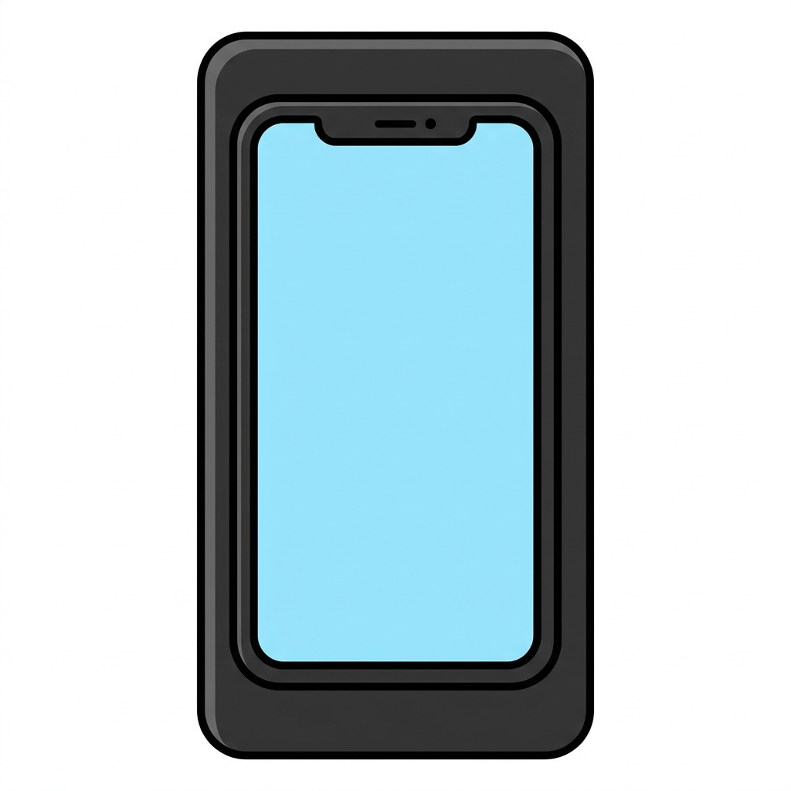

🎁 詐欺見分けチェック表（電話のそばに貼る見張り札＋本物の給付金一覧）

よく来たな。約束の物を渡す。
この1枚は、電話のそばに貼って使う「見張り札」だ。鳴ってから考えるのではない。鳴る前に、答えを貼っておく。
印刷して、冷蔵庫と電話台のよこへ。離れて暮らす家族のぶんも、頼んだぞ。
🚩 見張り札——電話が鳴ったら、この3つだけ
① 知らない番号には、出ない
留守番電話はいつもON。用のある人は用件を残す。犯人は声を録られるのを嫌って切る。
番号の頭に ＋（プラス） がついていたら海外発——詐欺電話の常連だ。
② 「お金の話」が出たら、いったん切る
給付金・払い戻し・口座・カード・暗証番号——どれか1語でも出たら切ってよい。
本物の役所は、切られても怒らない。大事な用は必ず書類で来る。
③ かけ直しは「自分で調べた番号」へ
相手の言う番号は仲間につながることがある。届いている通知書・保険証の裏・市役所の代表番号から自分でかける。
家族とは合言葉をひとつ決めておく。
📏 本物・ニセ物の物差し（これだけ覚えれば見分けられる）
| 物差し | 判定 |
|---|---|
| 本物の給付金は、電話をかけてこない | 電話で「もらえます」＝⚠️ ウソ |
| 本物は、ショートメールで手続きさせない | 文中の入り口（リンク）＝⚠️ 押さない |
| 本物は、手数料を先に求めない | 「先に手数料」＝⚠️ 100%詐欺 |
| 還付金（払い戻し）は、ATMでは受け取れない | 「ATMで手続き」＝⚠️ 100%詐欺（銀行協会・警察庁の公式見解） |
| 警察・役所は、カードを預からない・暗証番号を聞かない | 「預かります」「交換します」＝⚠️ 詐欺（ニセ警察はオレオレ型の74.9%） |
※「今日が期限」「あなただけ」と急がせるのも台本。急がされたら、むしろ詐欺のサインだ。
✅ いま「本物」の給付金・支援はこれだけ（2026年7月時点）
| 本物の支援 | 来かた・やること |
|---|---|
| 電気・ガス料金の値引き（2026年7〜9月） | 手続きいらず・自動で安くなる（標準世帯で3か月合計 約5,000円）。「手続きの電話」が来たら全部ウソ |
| 市区町村の独自の給付金 | 多くは郵送の書類で申請。お住まいの市の広報・公式サイトで確認 |
| 年金生活者支援給付金（月5,620円・2026年度） | 新しく対象になる人へ郵送のハガキが届く→書いて返送。電話やATMの手続きは一切ない |
⚠️ SNSで回っている「一律2万円の2回目」「1人5万円給付」「夏の緊急支援給付金」は、この時点で決まっていない・存在しない。この名前の電話・メールは全部ウソだ。
※給付金は今後変わりうる。最新は市区町村の公式サイトか広報で。
☎ 相談ダイヤル（切り取って電話のよこへ）
| こんな時 | 番号 |
|---|---|
| 怪しい電話が来た・不安 | ＃9110（警察相談専用電話） |
| 買い物・契約のトラブル | 188（消費者ホットライン） |
| お金を渡してしまった | 110 ＋ すぐ振込先の銀行へ連絡（口座を止められることがある。時間との勝負） |
□ 今日やること：①留守番電話をONにする ②この紙を電話のよこに貼る ③家族に合言葉を伝える
□ 固定電話の人：海外からの電話を無料で止められる（国際電話の利用休止。市外局番の警察相談＃9110で案内してもらえる）。自動通話録音機を無料で貸す自治体も多い——市役所に一声きいてみるといい。
🎁 動画で話していない「ネット振込型」の新手口（おまけ）
最近の還付金詐欺は、ATMだけではない。スマホやパソコンの「ネットバンキング」を操作させる型が増えている（国民生活センターが注意喚起）。
- 電話で「払い戻しがある」→「ATMより簡単ですよ」とネットバンキングの操作を誘導される
- 言われるまま進むと、振込のボタンを自分で押させられる
- 守り方はATMと同じ——「払い戻しの手続き」を電話ごしに指示された時点で詐欺確定。操作せず切って、＃9110へ
- すでに操作してしまったら、すぐ銀行に連絡（ネット振込は組戻し・口座凍結も時間との勝負）
フク先生より——「お金の電話は、いったん切る」。これだけで、老後の蓄えの守りは9割かたい。
切るのは失礼ではない。本物は、書類で来る。安心して切ってよいのだ。